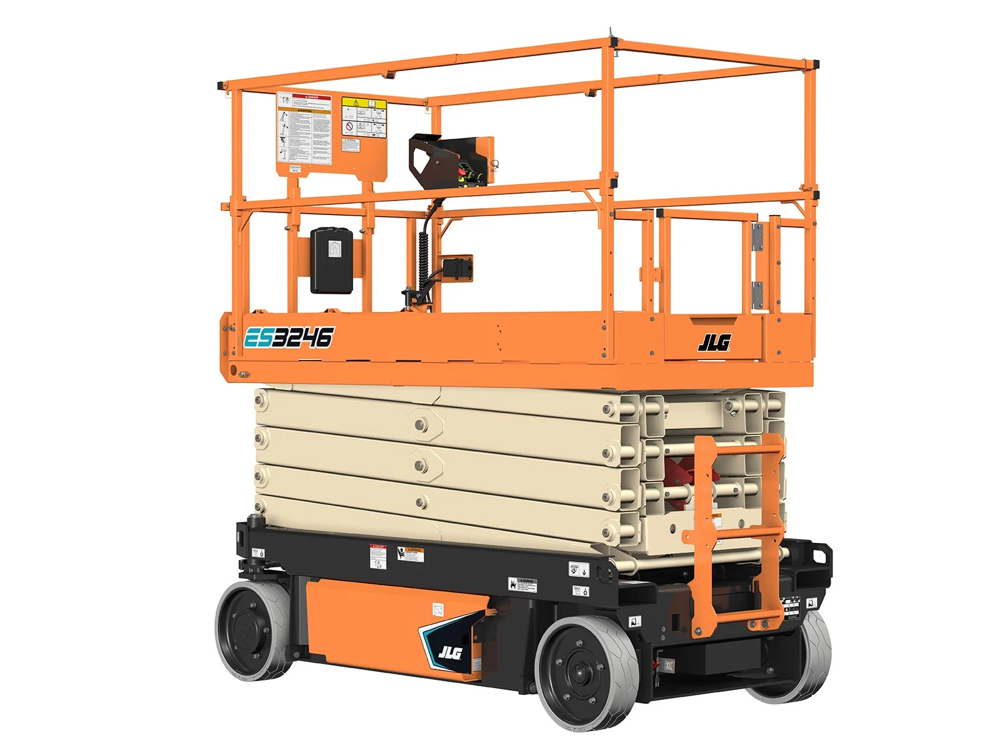
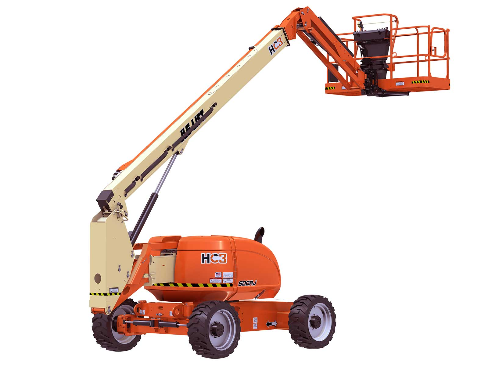

Genie GS-1930
Altura plataforma: 7.8 metros
Altura de trabajo: 9 metros
Combustible: Eléctrica

JLG 3246ES
Altura plataforma: 9.7 metros
Altura de trabajo: 12 metros
Combustible: Eléctrica

JLG 600AJ
Altura plataforma: 18 metros
Altura de trabajo: 20 metros
Combustible: Diésel